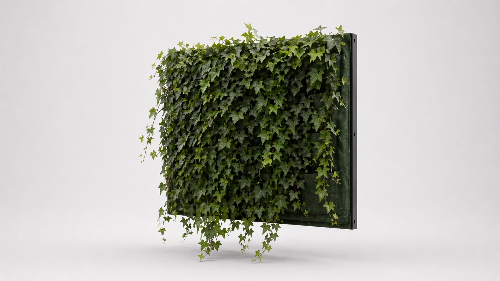
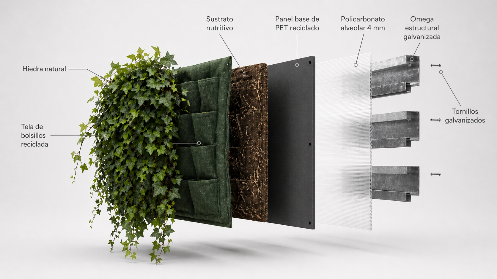

Muros verdes naturales para arquitectura contemporánea.
Diseñamos, fabricamos e implementamos sistemas de paisajismo vertical de alto estándar para oficinas, retail, desarrollos mixtos y espacios corporativos que buscan integrar naturaleza, eficiencia y valor arquitectónico.
Naturaleza integrada a la arquitectura.
Los muros verdes son sistemas vegetales integrados a la arquitectura que permiten incorporar naturaleza viva en superficies verticales, mejorando percepción espacial, identidad del proyecto y desempeño ambiental.
En Plant Art abordamos los muros verdes como infraestructura biofílica: soluciones diseñadas para operar con criterio técnico, mantenimiento especializado y adaptación a distintos tipos de activos.
Valor que trasciende lo visual.
Valor arquitectónico
Transforma superficies inertes en activos visuales que elevan la percepción del proyecto y su entorno inmediato.
Integración corporativa
Soluciones adaptadas a oficinas, centros comerciales y desarrollos que requieren presencia de marca diferenciada.
Experiencia del usuario
Mejora medible en bienestar, concentración y satisfacción de ocupantes en espacios con vegetación integrada.
Desempeño térmico
Reducción documentada de hasta −2°C en temperatura ambiente, contribuyendo a la eficiencia energética del edificio.
Diferenciación comercial
Activo visual de alto impacto que posiciona marcas en entornos competitivos de retail y hospitalidad.
Operación especializada
Mantenimiento técnico con protocolos de poda, control fitosanitario y gestión hídrica para garantizar longevidad.
Sistema Telmadermi.
Infraestructura vegetal con metodología propia, escalable a distintas arquitecturas y fabricada íntegramente con materiales reciclados. Un sistema diseñado para integrar desempeño, durabilidad y mantención especializada en activos de alto estándar.

Anatomía del sistema.
Cada módulo integra siete capas funcionales diseñadas para maximizar arraigo vegetal, drenaje eficiente y durabilidad estructural.

Adaptabilidad para cualquier entorno.
Oficinas corporativas
Lobbies, recepciones y áreas comunes que comunican identidad y compromiso ambiental a nivel directivo.
Retail y centros comerciales
Intervenciones de alto impacto visual en zonas de tráfico masivo que requieren durabilidad y presencia.
Desarrollos inmobiliarios
Fachadas y amenities que agregan valor diferencial al activo y contribuyen a certificaciones ambientales.
Hoteles y hospitalidad
Ambientación biofílica que mejora la experiencia del huésped y refuerza el posicionamiento premium.
Espacios interiores
Muros verdes con iluminación LED especializada para ambientes con baja luz natural y alto tráfico.
Proyectos institucionales
Hospitales, universidades y edificios públicos que requieren soluciones de largo plazo y bajo mantenimiento.
Ingeniería viva, paso a paso.
Diagnóstico del proyecto
Evaluación de condiciones climáticas, lumínicas y estructurales del espacio. Definición de alcance y viabilidad técnica.
Diseño y especificación
Propuesta botánica, integración arquitectónica y planimetría ejecutiva con definición de especies y sistema de riego.
Fabricación del sistema
Pre-cultivo de especies en módulos Telmadermi. Cada panel se fabrica con materiales reciclados y se acondiciona en vivero.
Instalación y puesta en marcha
Montaje de estructura portante, instalación de módulos vegetales y conexión de sistema de riego automatizado.
Operación y mantenimiento
Programa de visitas técnicas periódicas: poda, control fitosanitario, fertilización y gestión hídrica especializada.
.png)
MUT Tobalaba.
Proyecto emblemático de paisajismo vertical con certificación LEED Platino. Reconocido internacionalmente por su integración de infraestructura biofílica en arquitectura corporativa de alto estándar.
Más de 25 años de trayectoria respaldan nuestra capacidad de ejecución en proyectos de gran escala, con operación continua en más de 208.000 m² de áreas verdes.
Ver caso completoIncorpora infraestructura vegetal con estándar premium.
Conversemos sobre tu proyecto y definamos una solución de muro verde adaptada a su escala, arquitectura y operación.